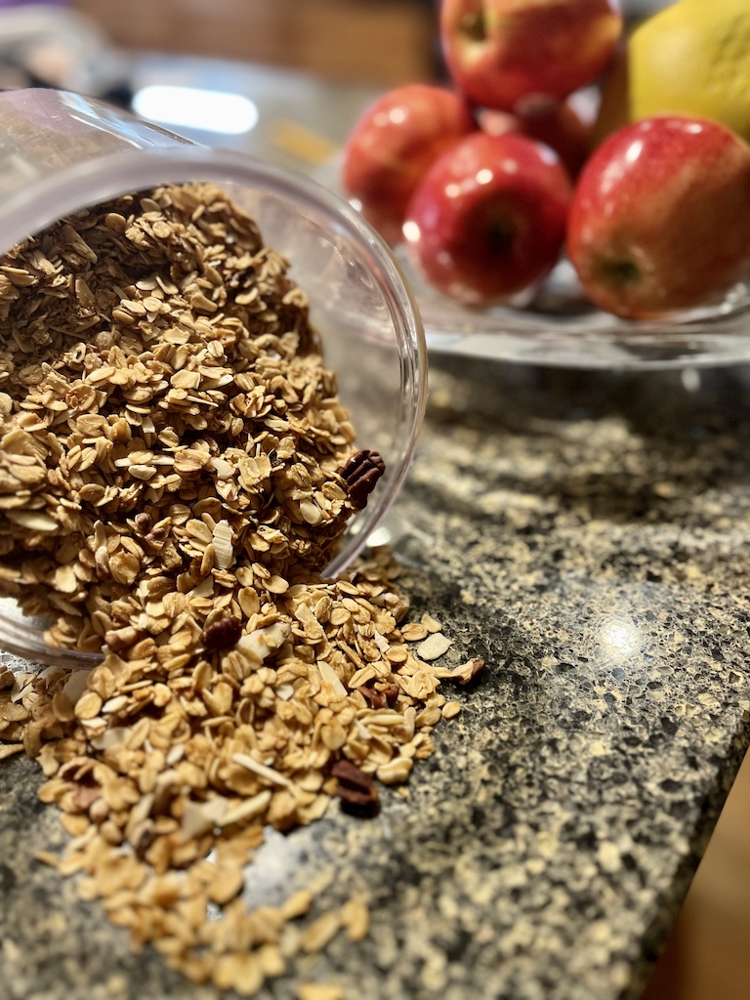

Granola
גרנולה
Ingredients
600 gr
old fashioned
oats
½ cup (40 gr) coconut powder
¼ cup oil
¼ cup (35 gr) butter
¼ cup honey
¼ cup maple syrup
70 gr walnuts
70 gr pecans
70 gr sliced almonds
Instructions
heat oven to 325°F
in a pot melt butter with oil, honey and maple
in a big bowl mix oats and coconut
pour oil/butter mixture on oats and mix well
spread on a baking tray and move to the middle rack of the oven
take out to mix every 5-7 minutes until the oats are golden and dry
break the walnuts and pecans into smaller bits and place in a baking tray
roast walnuts/pecan for ~10 minutes
add almonds and roast for an additional 5 minutes
let everything cool to room temp
mix and store in a dry place
Notes
you can switch the oil/butter to whatever oil type you like
you can switch the honey/maple to whatever sweetener you like
you can add raisins or dried cranberies at the end if you like (Elinor doesn't, so we don't)
sometimes I sprinkle ½ tsp vanilla extract at the end when I mix everything - totally optional

רכיבים
600 גרם שיבולת שועל
½ כוס אבקת קוקוס
¼ כוס שמן קנולה
35 גרם חמאה
¼ כוס דבש
¼ כוס סירופ מייפל
70 גרם אגוזי מלך
70 גרם פקאנים
70 גרם שקדים פרוסים
הוראות
חמם תנור ל 150°C
בסיר להמיס את החמאה עם השמן הדבש והמייפל
בקערה גדולה לערבב את שיבולת השועל והקוקוס
לשפוך את תערובת השמן חמאה דבש ומייפל על שיבולת השועל ולערבב היטב
להעביר לתבנית אפיה ולשטח
להכניס לתנור ולאפות. יש להוציא ולערבב כל 5-7 דקות
במקביל לשבור את הפקאנים ואגוזי המלך לשברים קטנים ולהכניס לתנור לעשר דקות
להוסיף את השקדים הפרוסים למשך עוד חמש דקות
לתת להכל להתקרר לטמפרטורת החדר
לערבב הכל ולאחסן בכלי אטום
הערות
אפשר להמיר את השמן והחמאה לכל תערובת שמנים כל עוד סך הכמות היא חצי כוס
ניתן להשתמש בכל ממתיק בכל יחס כל עוד סך הכל הוא חצי כוס
ניתן להוסיף בסוף ההכנה צימוקים או חמוציות מיובשות
אפשר לפזר קצת תמצית וניל על הגרנולה לאחר ההכנה